K(O)梶くん＠B4からDietブームが広まる！
「筋トレはダテじゃない」by K(O)梶
そして計測
暗雲来る
このあと落雷
これがM1の実力
そして計測
M2はこんなモンじゃない
道具は正しく使うこと！

お腹の筋肉がピキッて
こんなコトもできる
後ろにもっ
ぼくだって！
そして計測
ちょっと減りましたよ．←誤差です．
| ・Dieters ! (H21.07.06) | |||
K(O)梶くん＠B4からDietブームが広まる！ |
|||
|
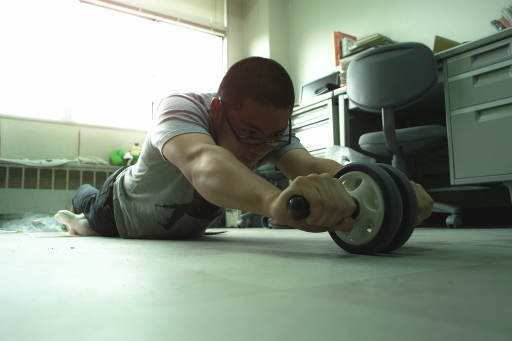
「筋トレはダテじゃない」by K(O)梶 |
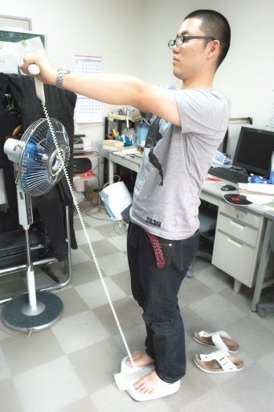
そして計測 | ||
|
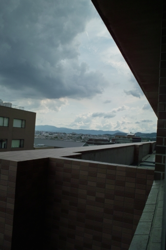
暗雲来る |
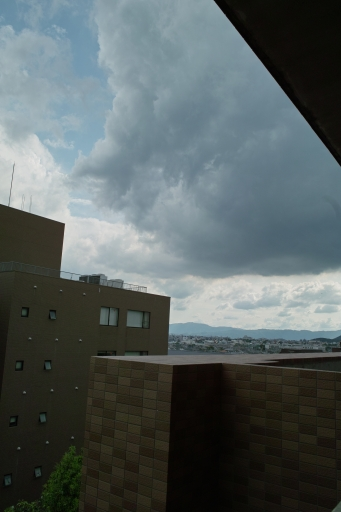
このあと落雷 | ||
|
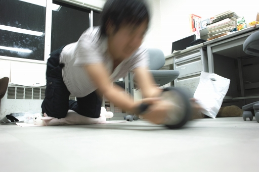
これがM1の実力 |
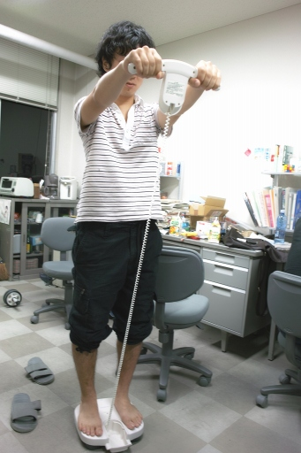
そして計測 | ||
|
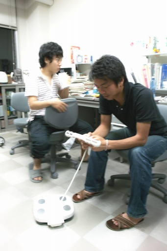
M2はこんなモンじゃない |
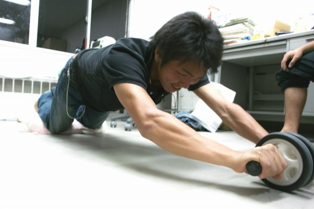
道具は正しく使うこと！ | ||
|
お腹の筋肉がピキッて |
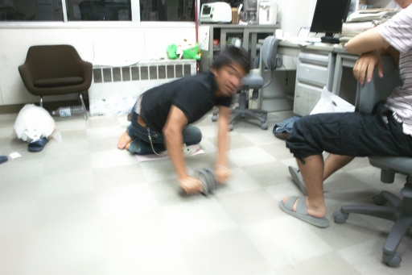
こんなコトもできる | ||
|
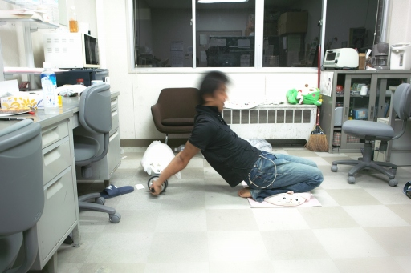
後ろにもっ |
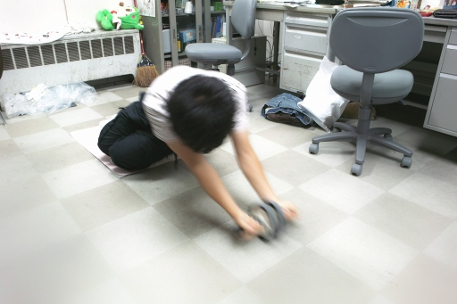
ぼくだって！ | ||
|
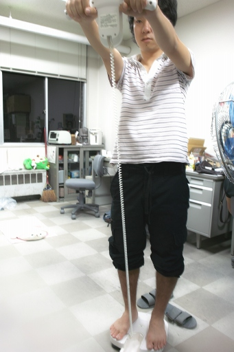
そして計測 |
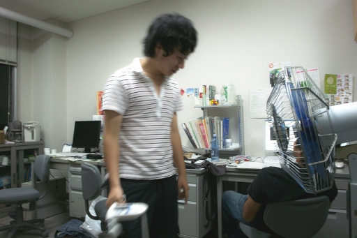
ちょっと減りましたよ．←誤差です． | ||